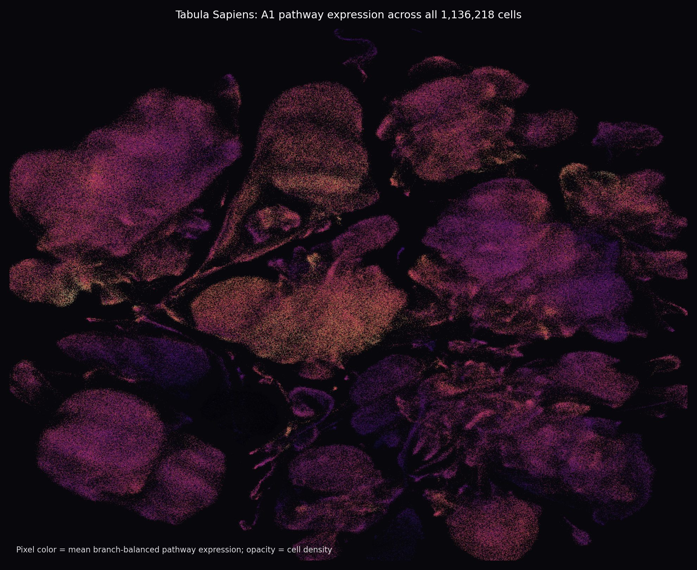
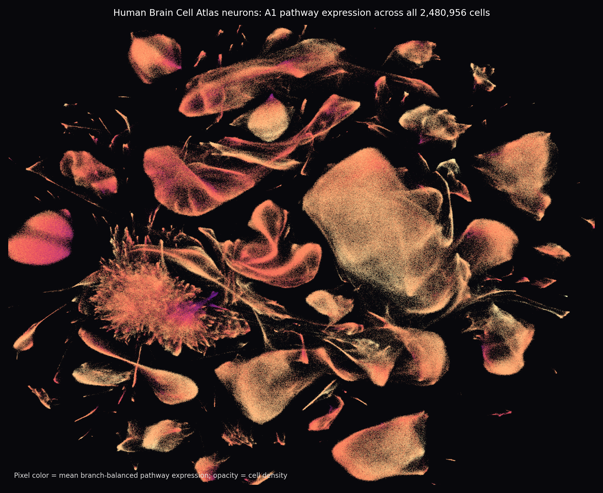

3,617,174 cells scored. New neighborhood views separate isolated high cells from coherent local structure. Use Smoothed to see k-neighbor signal and Top-tail support to find neighborhoods containing many top-5% cells. Enrichment tables rank cell types and regions directly instead of requiring a visible UMAP island.
